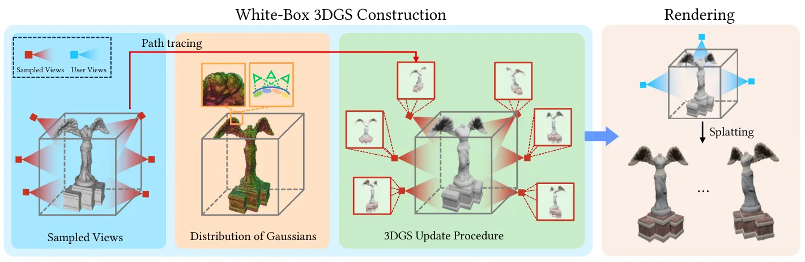
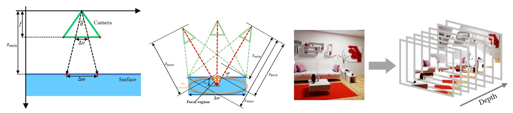

Mesh2GS：基于全光函数采样的白盒 3DGS 构建Mesh2GS: White-Box 3DGS Construction via Plenoptic Sampling
对三维重建/3DGS 资产管线有直接价值，尤其适合 mesh 与 splat 表示互转；短板是代码尚未发布且与在线 SLAM 关系间接。
一句话工作总结
从网格直接、可解释地生成 3DGS，面向可控资产转换、共享渲染和带全局光照的高质量场景表示。
摘要
现有 3DGS 与网格结合工作多关注从多视图图像重建 mesh，或以启发式方式把高斯绑定到网格。Mesh2GS 反向研究从 mesh 直接构建 3DGS：作者基于 plenoptic sampling theory 推导采样视角数量与 3D Gaussian 分布，提出带 albedo-shading 分解的 3DGS 更新过程以高效捕获全局光照，并用神经光照增强模块处理非朗伯反射。实验显示其在高质量全局光照渲染和非朗伯高光捕获上优于基线，代码计划在接收后发布。
3D Gaussian Splatting (3DGS) has emerged as a promising method for high-quality, real-time 3D reconstruction. To associate 3DGS with mesh representations, existing methods primarily focus on 3DGS-to-mesh reconstruction from multi-view images. In contrast, the problem of converting a mesh into 3DGS has received comparatively less attention. Instead of relying on heuristic strategies that bind 3D Gaussians to the mesh, we propose a novel white-box 3DGS construction framework, termed Mesh2GS, which generates 3DGS directly from mesh geometry based on plenoptic sampling theory, achieving Nyquist-level performance for high-quality global illumination rendering. Firstly, we propose a plenoptic sampling guided 3DGS construction strategy that theoretically derives the minimum sampling rate of the sampled views and the distribution of 3D Gaussians. Second, we propose a novel 3DGS update procedure with albedo--shading decomposition for efficient global-illumination capture. Finally, we introduce a neural illumination enhancement module to handle non-Lambertian effects. Experimental results demonstrate that our method surpasses state-of-the-art baselines and is practically effective for both real-time shared rendering and non-Lambertian effects capturing specular highlights. The project code will be released upon acceptance.
中文解读摘录
- 英文题名：Scene-Level Heterogeneous Physics Simulation with 3D Gaussian Splats
- 作者：Xiaoyang Liu, Shangzhe Wu, Kai Han
- 类别/来源：cs.GR, cs.AI, cs.CV；rss:cs.GR；采集 score=12；阅读优先级=9.2/10。
- 一句话总结：把 3DGS、网格和流体统一抽象为物理粒子，使捕获场景中的高斯资产能够参与真实交互和非刚体变形。
- 为什么值得看：与 3DGS 场景表示、交互式三维资产和机器人仿真高度相关；亮点在于从渲染表示跨到统一物理表示。需后续确认开源计划、运行成本和复杂真实场景鲁棒性。
- 标签：3DGS、物理仿真、场景级交互、非刚体变形
- 链接：abs / PDF
图表/页面预览
{kind=link}

{kind=link}
